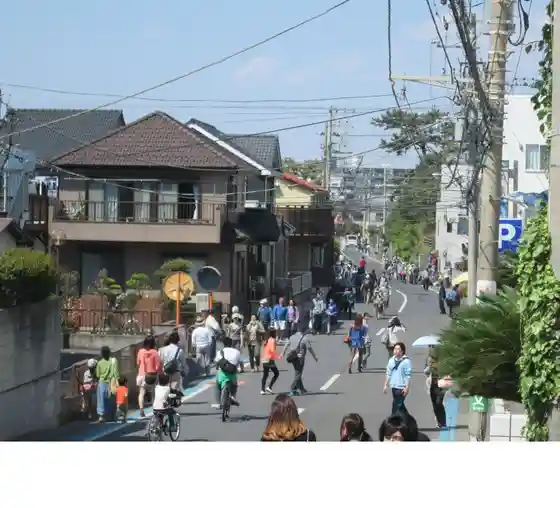
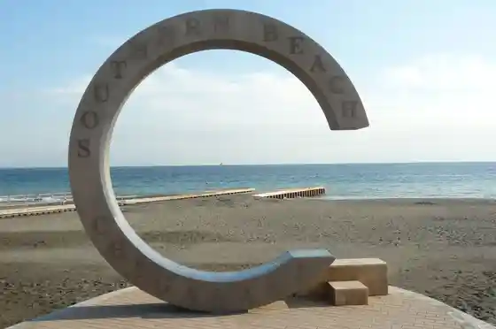
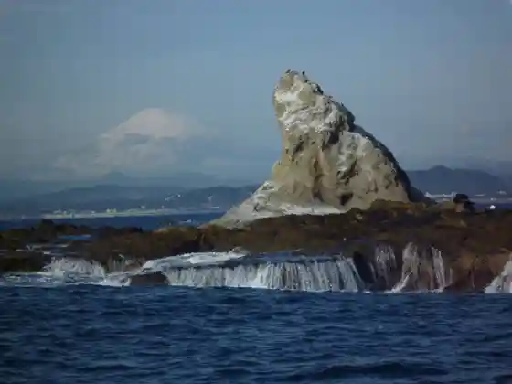
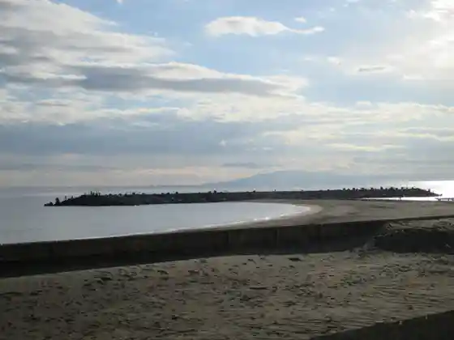

Sazan Tori
Chigasaki, Kanagawa · Official / source link

Chigasaki Sazan C
Chigasaki, Kanagawa · Official / source link

Eboshi Iwa Shuyu Fune
Chigasaki, Kanagawa · 0467-82-6946 · Official / source link

Nanko no Hidari Fuji
Chigasaki, Kanagawa · 0467-82-1111 · Official / source link
Heddo Land Bodooku
Chigasaki, Kanagawa · Official / source link

Himuro Tsubaki Garden
Chigasaki, Kanagawa · 0467-82-2823 · Official / source link
Yuzo Tori
Chigasaki, Kanagawa · Official / source link
Kaiko Takeshi Memorial Museum
Chigasaki, Kanagawa · 0467-87-0567 · Official / source link
Kanagawa Prefectural Chigasaki Satoyama Park
Chigasaki, Kanagawa · 0467-50-6058 · Official / source link
Suzuki Sono (Kudamono Kari)
Chigasaki, Kanagawa · 0467-51-0283 · Official / source link
Nanko In Kinen Taiyo no Sato Garden
Chigasaki, Kanagawa · 0467-82-1111 · Official / source link
Chigasaki Art Museum
Chigasaki, Kanagawa · 0467-88-1177 · Official / source link
Chigasaki Chashitsu Shoin Shorai Iori
Chigasaki, Kanagawa · 0467-87-5258 · Official / source link
Chigasaki Yukari no Jimbutsu Kan
Chigasaki, Kanagawa · 0467-81-5015 · Official / source link
Matsugaoka Rachien Tori Park
Chigasaki, Kanagawa · Official / source link
Chigasaki Tourist Information (Antenashoppu)
Chigasaki, Kanagawa · 0467-82-3986 · Official / source link
Sazan Beach Chigasaki Beach
Chigasaki, Kanagawa · 0467-81-7144 · Official / source link
Hamada Ya Kashi Ho Main Shop
Chigasaki, Kanagawa · Official / source link
Plenty’s Chigasaki Main Shop
Chigasaki, Kanagawa · 0467-88-0013 · Official / source link
Kakizawa Ranch
Chigasaki, Kanagawa · 0467-51-0940 · Official / source link
Plenty’s Milk&Cheese Factory
Chigasaki, Kanagawa · 0467-33-4310 · Official / source link
Noten Yumoto Yu Kai Sokai
Chigasaki, Kanagawa · 0467-82-4126 · Official / source link
Kumazawa Shuzo
Chigasaki, Kanagawa · 0467-52-6115 · Official / source link
Daiichi Katta Kiiro Park (Chuo Park)
Chigasaki, Kanagawa · Official / source link
Historic Site Tennenkinembutsu (Kyu Sagamigawa Kyokyaku)
Chigasaki, Kanagawa · Official / source link
Roadside Station Shonan Chigasaki
Chigasaki, Kanagawa · 0467-33-6360 · Official / source link
Plenty’s Chigasaki Main Shop
Chigasaki, Kanagawa · 0467-88-0013 · Official / source link